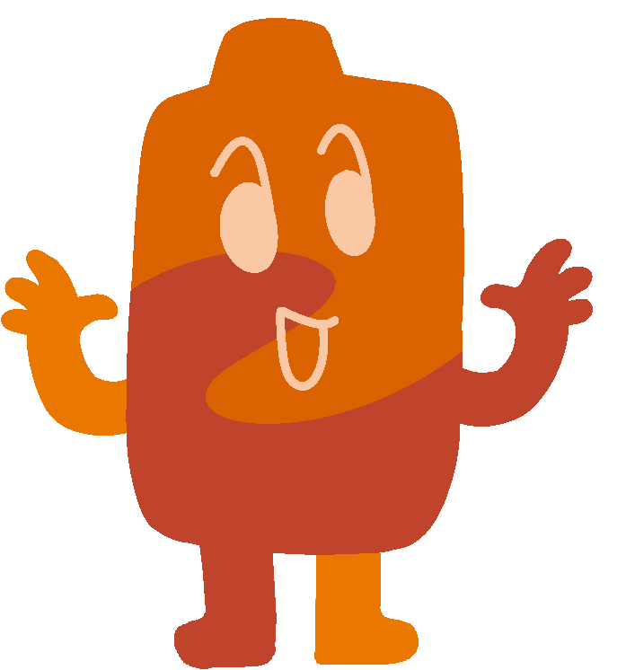
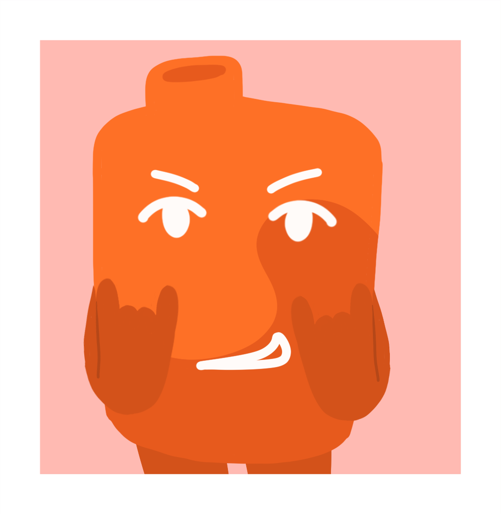

- Alias
- Geeky
- Object
- Disposable vape, strawberry mango flavor
- Identity
- He/him, male
- Time in the Inbetween
- ~150 blooms
- Favorite food
- Pizza and cheese fries
- Favorite drink
- Off brand cola
- Hobbies
- Playing video games, doing stupid stunts
- Favorite thing to do
- Take an edible and stroll through the Dream Garden
- Favorite resident
- Clickbaity
Geeky is the House's token "frat boy". He values having fun more than anything, and is surprisingly a lot nicer than he might come off as. Making jokes and entertaining is his strong suit. He is surprisingly happy to be in the House, using his free will to his advantage. He is generally described as a risk taker and likes adrenaline rushes.
Connections

Trivia
- His main goal is to blow up, and then act like he don't know nobody.
- He's actually pretty good at skateboarding, and grind the entire length of the curb around the building Green Daisy hates this.
- Geeky tends to skip out on breakfast, because he has his own wake and bake ritual he prefers to engage in.
- He envies how easy it is for Dream to just chillax.
- His two most frequently used words are "watch this".